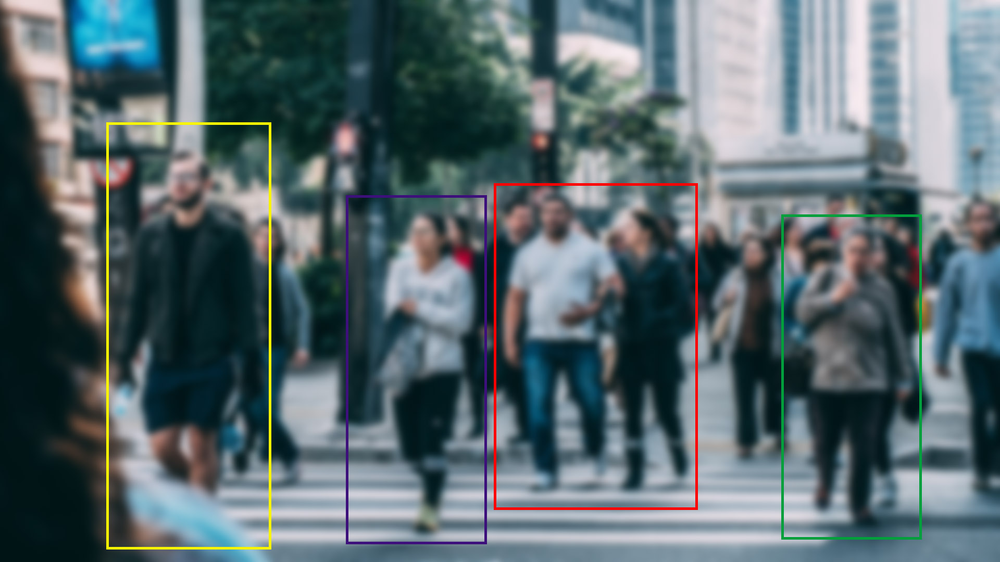
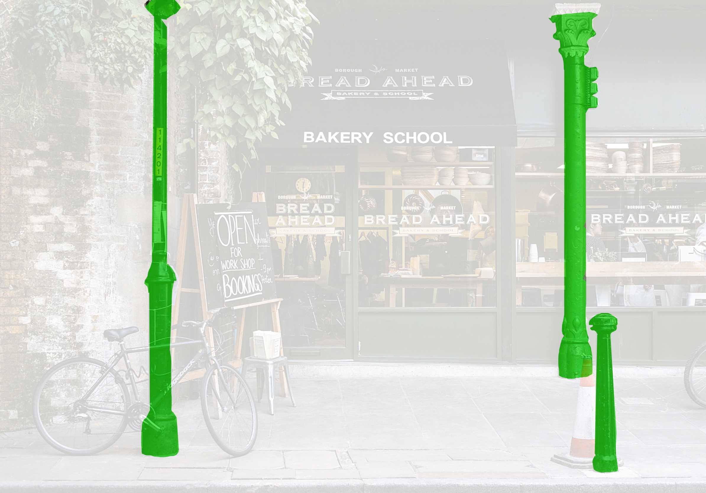

See the Benefits of Horizon
Reduced Vision
Reduced vision can reduce mobility by making it more difficult to move through the environment safely, efficiently and independently.
AR Enhanced Vision
Horizon Real Time Object Tracking with AR glasses can increase mobility of people with reduced vision by visual markers to highlight environmental obstacles.
See More with Horizon
Our Object Tracking technology can enhance object detection for many people with reduced vision which increases mobility. Our technology can identify and track both stationary and moving objects. Obstacles are also detected and marked. Users can feel safer and move more freely with enhanced AR vision powered by Horizon!
Movable Objects

People

Stationary Objects
Horizon Real Time Object Tracking with AR glasses detects targets, marks them by a "boundary box" and other visual aids, and tracks them, in real time. This increases environmental targets awareness greatly for users with reduced vision, improving mobility.
AR Object Tracking
Horizon is the most advanced Object Tracking technology platform in the World. Enhance YOUR mobility with our AR Object Tracking technology!